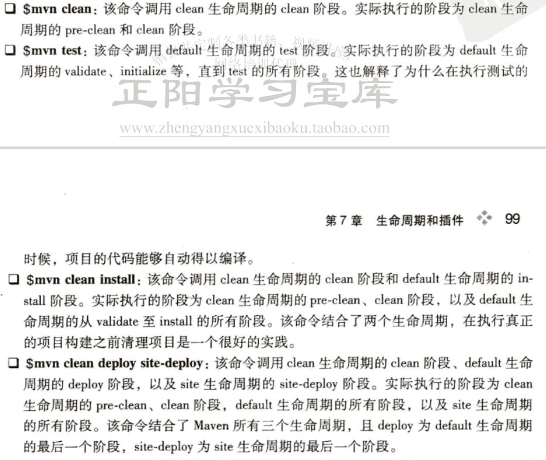
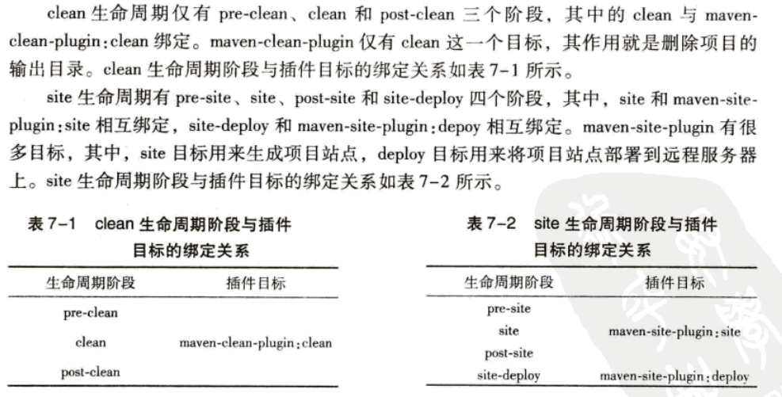
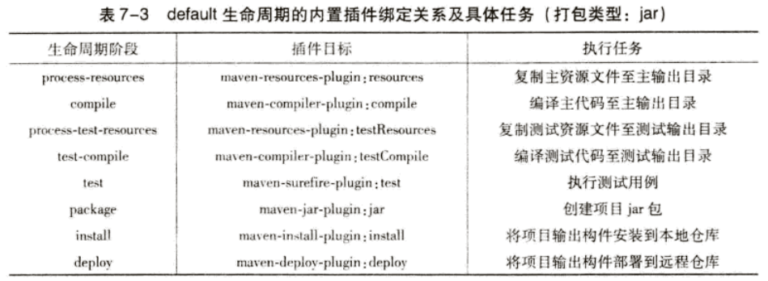
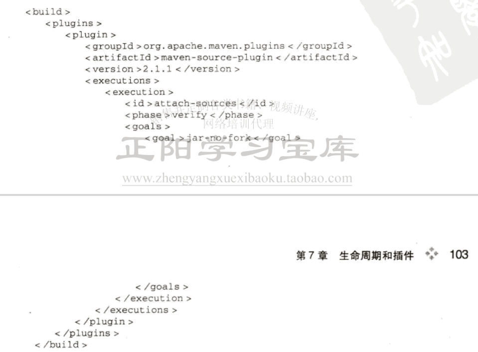
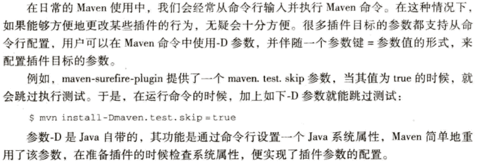
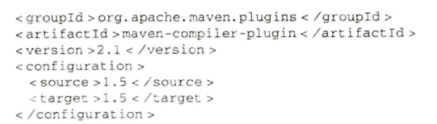
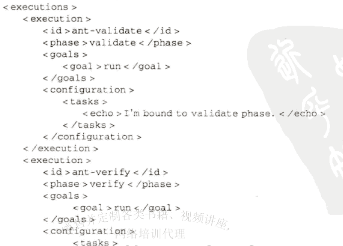

坐标 依赖 仓库 生命周期 插件
生命周期就是项目构建的过程，比如清理、编译、测试和部署。然而在以往的构建过程中，无论是手动还是执行自动化脚本，都无法满足方便快捷可重用的要求。
为此，maven对所有的构建过程进行了抽象和统一，形成了maven的生命周期这样一个概念。maven的生命周期包含了几乎所有的构建过程：清理、初始化、编译、测试、 打包、集成测试、验证、部署和站点生成等。几乎所有项目的构建过程都可以用这样一个生命周期来概括。
maven的生命周期是抽象的，书中以模板方法模式来类比。也就是说，生命周期抽象了构建的各个步骤，定义了他们的次序，但是没有定义具体的实现。具体的实现它委托给插件
去完成了。每个构建的步骤可以绑定一个或者多个插件的行为，而且maven为每个构建的步骤编写并绑定的默认的插件。但是，用户也可以自己绑定构建的行为插件甚至自己
编写插件。
最后，maven通过生命周期定义了一致的构建标准，通过提供默认插件稳定和简化了构建过程，而且提供了插件的扩展功能。
maven有三套互相独立的生命周期，分别是clean、default、 site。clean清理项目，default构建项目，site建立项目站点。
每个生命周期包含一些阶段，这些阶段是有顺序的，后面的阶段依赖于前面的阶段。用户与maven交互就是调用这些生命周期阶段。倘若调用了顺序靠后的阶段，那么 在此阶段之前的阶段都会被执行。此外这三个生命周期完全独立，没有任何关系。
clean生命周期的目的是清理项目，包含3个阶段：pre-clean clean post-clean。
核心，包含了项目构建的所需要执行的所有步骤。包含的阶段太多，就此略过。
这个生命周期的目的是为了建立和发布项目站点。maven能够根据pom信息，自动生成一个友好的站点，方便团队交流和发布项目信息。 包含阶段:pre-site site post-site site-deploy(将生成的项目站点发布到服务器上)
从命令行执行maven任务的主要方式是调用maven的生命周期片段。注意，生命周期之间互相独立而且同一个生命周期的片段是有前后依赖关系的。举例如下：
前面我们了解了插件的作用就是实现生命周期的某个构建的步骤。插件以独立的构件形式存在。maven会在需要的时候下载并使用插件。
插件目标就是一个插件所提供的功能。对于每个功能而言，可能他们都需要一段共同的代码，那样的话为每个功能编写一个插件会重复写大量的代码。这样的话不如
在一个插件中提供多个功能，提高代码的复用率。插件目标就是插件能够提供的功能。
一般写法：插件前缀:插件目标。如dependency:analyze.
插件绑定就是生命周期的某个阶段与某个插件的目标绑定在一起，来完成具体的构建任务。
为了让用户不需要配置插件目标就可以构建maven项目，maven在核心为一些主要的生命周期阶段绑定了很多插件的目标。
其中clean和site的绑定如下：
相对于clean和site，default生命周期的插件绑定要复杂的多。由于项目的打包类型将会影响到构建的具体过程，因此，default生命周期的阶段和插件目标的绑定 是由打包类型决定的？最常见、最重要也是默认的打包类型为jar，基于jar打包类型的项目的maven生命周期内置插件绑定关系及具体任务如下：
相对于内置绑定，用户可以自定义生命周期阶段与构建目标的绑定关系。
绑定的方式是在pom.xml文件中声明一个插件依赖，并在其中配置目标和阶段。很简单，如下：
除了声明依赖基本的配置之外，还有一些配置如executions-execution可以用来配置执行一项任务。通过phrase绑定生命周期阶段，通过goals绑定插件的目标，至此 配置结束。
其中，phrase可以不配置，因为在编写插件的时候，插件的目标默认绑定了某个阶段。可以使用maven-help-plugin查看插件的详细信息。
关于插件目标的执行顺序，对于绑定在不同阶段的插件目标，其执行顺序根据阶段顺序来。如果同一个阶段绑定了多个插件目标的话，根据插件声明的先后顺序来。
完成阶段和插件目标的绑定之后，目标还有一些可配置的参数来调整目标的任务。用户可以通过命令行或者pom配置来配置这些参数。
命令行参数配置如下：
pom文件配置全局参数，如下：
这样对于插件的每个任务都会使用这个配置，当然，我们也可以对每个任务进行单独的配置，如下：
由于maven插件繁杂众多，有时候获取想要的插件或者利用好手中的插件并不容易。